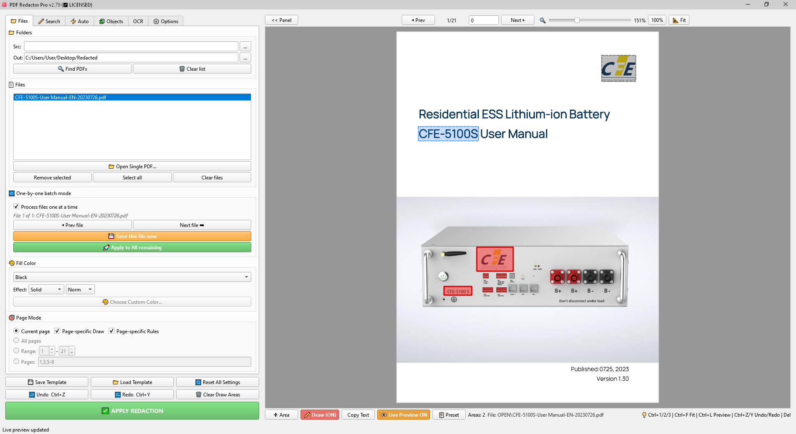
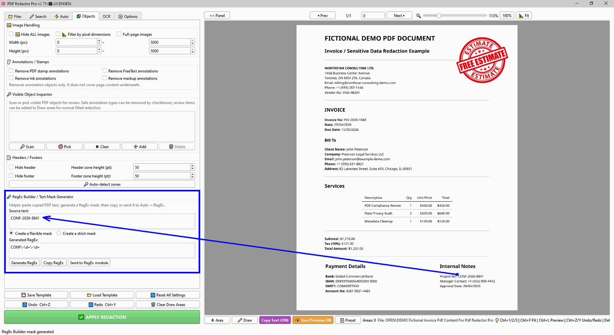
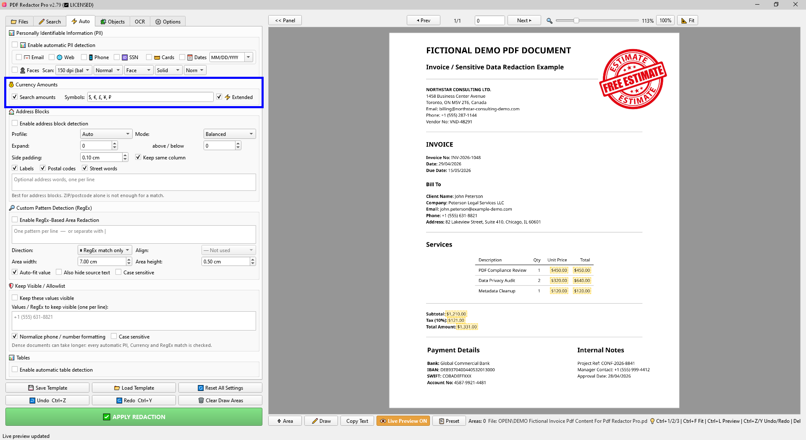
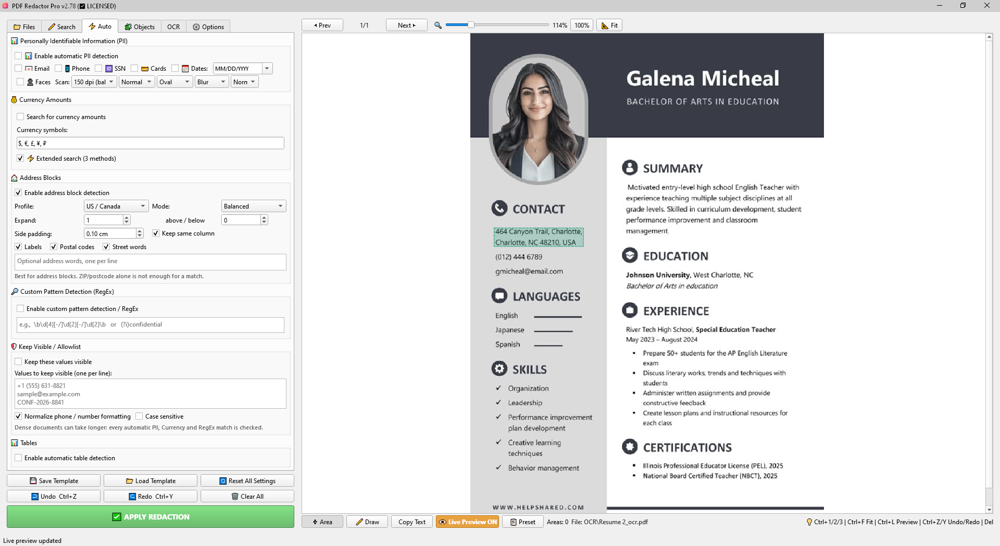
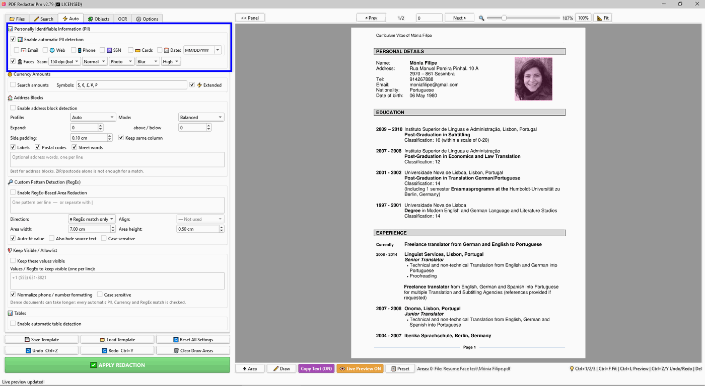
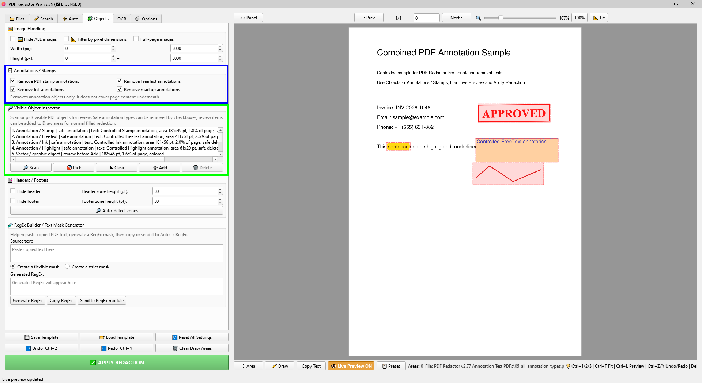
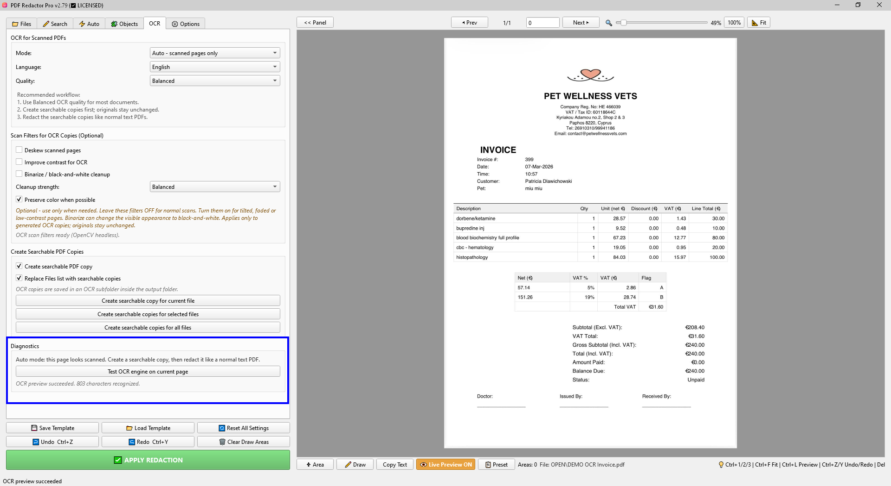
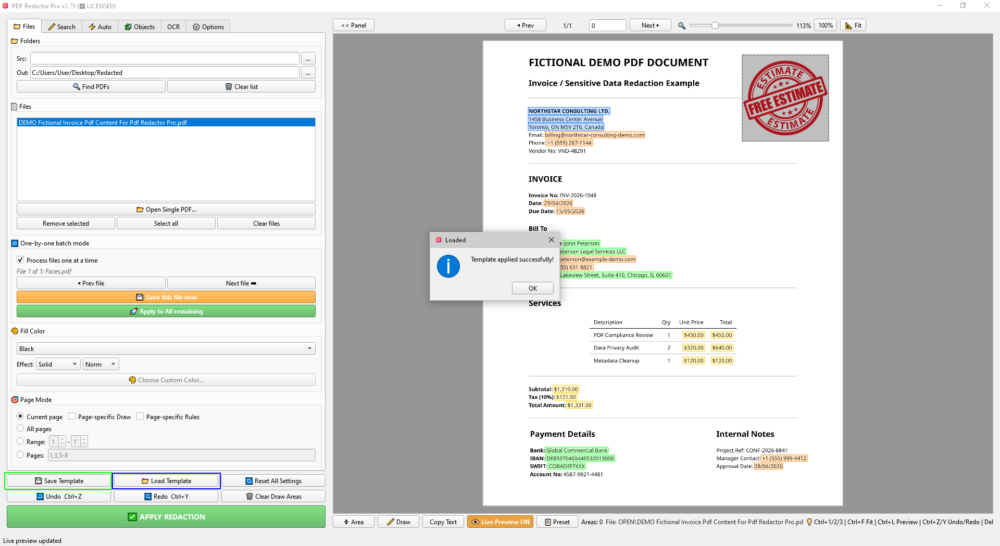

PDF Redactor Pro
User Guide
A practical guide to manual redaction, text search, automatic detection, OCR, object inspection, batch processing and presets.
This guide is stored locally with the application. External links open only when you choose product, support or video tutorial buttons.
Quick Start
- Open one PDF or choose a source folder and click Find PDFs.
- Choose redaction tools: manual Draw areas, Search, Auto detection, Objects or OCR.
- Turn on Live Preview to review detected areas before applying changes.
- Use Apply Redaction to create redacted output files in the selected output folder.
Files Tab
The Files tab controls input/output folders, the file list, one-by-one processing, fill style and page mode.

File List
- Find PDFs scans the selected source folder.
- Open Single PDF loads one file for review.
- Remove selected and Clear files manage the list without changing files on disk.
Page Mode
Choose whether redaction applies to the current page, all pages, a page range, or a custom page list such as 1,3,5-8.
Page-specific Draw and Page-specific Rules
Use these options from the Files tab when a long PDF does not have the same layout on every page. They let you work page by page without losing the normal Search, Auto and Object workflows.

Page-specific Draw
Use this for long PDFs where different pages need different manual Draw areas. Draw areas are saved only for the page where they are drawn, while Search, Auto and Object rules still work normally across the document.
Page-specific Rules
Advanced mode for long PDFs. The app saves redaction settings separately for each page, including PII, Face Detect, Address Blocks, Search, RegEx, Currency, Objects and manual Draw areas.
Pages without saved rules
If a page has no saved page-specific rules, it uses the base settings. This keeps regular pages simple while allowing exceptions only where the layout changes.
Performance note
Page-specific Rules can make Live Preview and processing slower on very large documents because the app has to check saved settings page by page.
Live Preview
Live Preview shows the areas that will be redacted. Different detection types use different overlay colors, which can be changed in Options.

- Area selects and moves existing manual areas.
- Draw creates manual redaction areas.
- Copy Text copies selected PDF text to the clipboard.
- Live Preview toggles preview overlays.
- Preset opens quick preset selection.
Search Tab
The Search tab is for text-based redaction rules. It works best on normal text PDFs or OCR-searchable copies.

Exact Text Search
Redacts exact words or phrases. Each line is treated as a separate search phrase. Multi-line matching can be enabled for phrases split across lines.
Text-Based Area Redaction
Finds a keyword and redacts an area near it. Use Auto-fit for value-like fields or set area width and height manually.
Colon Label Redaction
Use this for invoice-style fields where the value follows a label and colon, such as Total:, Account: or Vendor No:.
Additional Text-Based Area
A second independent keyword-to-area block for complex documents that need two different area rules.
Simple Contextual Search
Finds text near keywords at a specified distance. Useful for labels such as Total, Subtotal, Amount and similar fields.
RegEx and Area Rules
Version 2.79 adds more control for pattern-based redaction and structured document layouts. Use these tools when simple text search is not enough.
RegEx Area Redaction
Find a regular-expression match and redact an area next to, above or below it. This is useful for account numbers, invoice fields and IDs that appear near stable labels.
Send to RegEx Module
When a RegEx rule already exists, additional rules should be added on a new line. Keep one pattern per line for easier review and testing.
Currency Codes
Currency amount detection can include symbols and ISO-like currency codes. Review selected codes to avoid hiding unrelated short words.
RegEx match only
Use match-only mode when the pattern itself is the sensitive value. Use directional area modes when the sensitive value is near a stable RegEx anchor.

Auto Detection Tab
The Auto tab groups automatic detectors: PII, currency amounts, address blocks, custom RegEx, allowlist protection and tables.

PII Detection
Detects common personal data such as email addresses, phone numbers, SSNs, card-like numbers, dates and faces. Use date format selection to reduce false positives.
Currency Amounts
Finds money values using selected currency symbols, currency codes and extended matching methods. In v2.79, review currency-code selections carefully when documents contain short uppercase abbreviations.

Custom Pattern Detection (RegEx)
Use regular expressions for document-specific formats, such as account numbers, custom IDs or phone formats not covered by PII presets. Keep rules readable and place separate patterns on separate lines.
Address Blocks
Address Blocks detect address-like text using labels, postal codes, street words and optional user-provided address words.

- Profile selects regional address rules.
- Mode controls detection strictness.
- Expand above / below lets you include nearby lines manually.
- Keep same column helps avoid grabbing unrelated text in adjacent columns.
Keep Visible / Allowlist
The Allowlist protects specific values from automatic redaction. This is useful when you need to hide all matching values except one approved number, email, account code or reference.

- Enter one value per line.
- Enable normalization for phone and number formatting when documents use inconsistent spacing or punctuation.
- Dense documents can take longer because every automatic match is checked against the allowlist.
Face Detection
Face Detection is part of automatic PII redaction. It is designed to affect photos or scanned images containing human faces, not all images in the document.

- Scan DPI controls detection quality and speed.
- Shape can use rectangle or oval-style redaction preview.
- Effect controls final redaction style where supported.
Objects Tab
The Objects tab handles images, PDF annotations/stamps, visible object inspection, headers and footers.

Image Handling
Hide all images or filter images by pixel dimensions. Use full-page image handling only when you intentionally need to process scanned-image pages.
Annotations / Stamps
Removes supported PDF annotation objects such as Stamp, FreeText, Ink and markup annotations. These are separate PDF objects and can often be removed without covering page content underneath.
Visible Object Inspector
- Scan lists visible objects on the current page.
- Pick helps select an object from the page.
- Add adds selected object rectangles to normal Draw areas for review.
- Delete safely deletes supported annotation objects when available. It is intended for real PDF annotations/stamps, not for ordinary page text.
- Clear clears the inspector list.
Safe Annotation Delete
Safe Delete removes supported visible annotation objects directly. After deleting, use Undo/Redo where available or reload the PDF if you need to compare the result with the original.
OCR for Scanned PDFs
OCR creates searchable PDF copies from scanned PDFs. After OCR, use the searchable copies like normal text PDFs with Search, Auto Detection and presets.

OCR Diagnostics
The diagnostics view helps check OCR availability, language data and workflow problems before processing many files.

Recommended OCR Workflow
- Use Balanced OCR quality for most documents.
- Create searchable copies first. Originals remain unchanged.
- Redact the searchable copies like normal text PDFs.
Languages
OCR supports the installed bundled language data, including English, German, French, Spanish, Portuguese and Italian when included in the application package.
Scan Filters for OCR Copies
- Deskew scanned pages attempts to straighten tilted scans.
- Improve contrast for OCR can help faded text recognition.
- Binarize / black-and-white cleanup may improve poor scans but changes the visible appearance of OCR copies.
- Preserve color when possible keeps visual color when compatible with the selected filter.
Options Tab
The Options tab contains processing settings, Live Preview colors, preset templates and product information buttons.

Processing Options
- Extra lossless compression can reduce size slightly but may be slower.
- Deep clean hidden data removes hidden content and metadata from generated output where supported.
- Parallel processing speeds up batch work on capable computers.
- Generate report creates a processing report when enabled.
Preset Templates
Presets are editable starting points. They can fill Search, Auto, OCR and layout-related settings. Select a document language before applying a preset when language-specific keywords are available.

Help & Product Info
Use these buttons to open the local User Guide, purchase/update page, YouTube channel, contact page, or About dialog.
Batch Workflows
PDF Redactor Pro can process multiple files at once or one file at a time.
- Use All files for repeatable settings across a folder.
- Use Process files one at a time when you need to inspect or adjust each document before saving.
- Save templates for repeated document types.
Troubleshooting
Search or Auto Detection Finds Nothing
The PDF may be a scanned image. Create an OCR searchable copy first, then run Search or Auto Detection again.
OCR Output Looks Different
Scan filters can change the visible appearance of the generated OCR copy. Use them only for poor scans and keep originals unchanged.
Face or Address Detection Has False Positives
Automatic detection is a helper, not a replacement for review. Adjust strictness, profiles, expansion, or remove unwanted manual Draw areas before applying redaction.
Output Must Be Verified
Open the redacted PDF and confirm that sensitive content is permanently removed before sharing.